I
С чего началась эта книга
Учитель, который записал историю села

В школе хранится рукописная книга. Её написал от руки Пётр Александрович Кострица.
Пётр Александрович родился в 1922 году. Он прошёл Великую Отечественную войну. Его портрет есть на плакате «Бессмертный полк». После войны он много лет преподавал историю в Новомихайловской школе.
Свою книгу о селе он писал синими чернилами, ровным наклонным почерком. Бумагу брал ту, что была под рукой: старые цветные бланки. Внизу каждого листа напечатано «Утверждено ... 196_ г.». Значит, книга писалась между 1960-ми годами и 1981 годом, когда автора не стало.
Расшифрованы 3 страницы рукописи о начале села. Из 310 слов прочитано 304. Все факты сверены с газетами 2001–2010 годов, школьной презентацией и интернет-источниками.
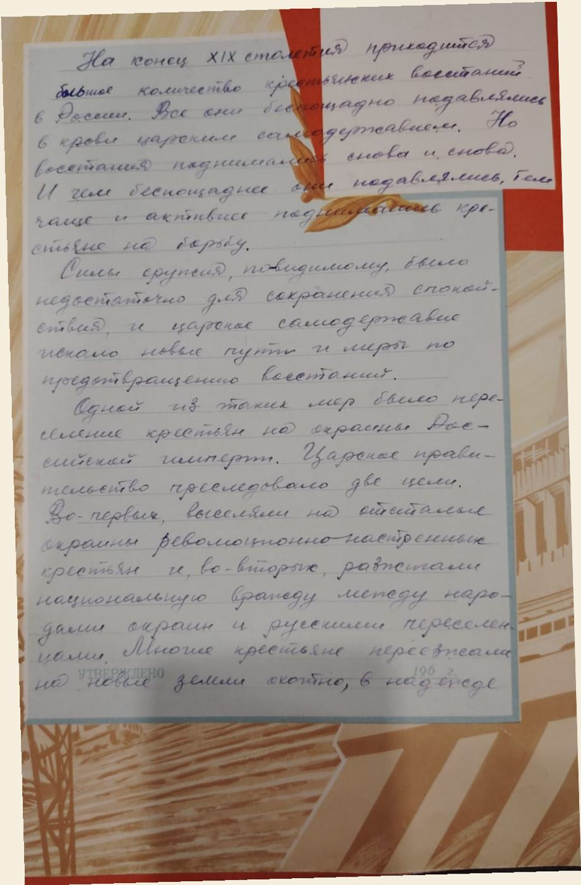
Конец XIX века
В центральных губерниях Российской империи жило очень много крестьян. Земли на всех не хватало, семьи жили бедно.
13 июля 1889 года вышло Положение о добровольном переселении на казённые земли. После неурожая 1891–1892 годов крестьяне ещё сильнее захотели уехать на новые земли. Многие ехали охотно, «в надежде получить собственный клочок» земли.
На дорогу государство давало деньги в долг. Ссуды часто не хватало даже на дорогу. Железной дороги до Петропавловска ещё не было, часть пути ехали на телегах.
— 3 —| Губерния | Где сейчас |
|---|---|
| Черниговская | Украина |
| Полтавская | Украина |
| Подольская | Украина |
| Орловская | Россия |
| Воронежская | Россия |
| Курская | Россия |
| Рязанская | Россия |
| Оренбургская | Россия |
Земля, куда ехали переселенцы, не была пустой. Здесь веками кочевали казахские аулы, здесь были их пастбища. Сначала крестьяне брали землю у казахов в аренду. Позже власть стала забирать пастбища и отдавать их переселенцам. Из-за этого появлялись споры.
— 4 —1894 – 1895
Основатели села приехали осенью 1894 года. Построить дома до зимы они не успели и зимовали в селе Богомолово.
Ранней весной 1895 года на бугре между озёрами «Кас-Агач» и «Русское» появились первые поселенцы. Каждый хозяин получил 15 десятин земли. Это около 16 гектаров.
Строили всё вместе, артелью. Сначала рыли землянки, потом покупали скот и инструменты. Стены делали из самана, то есть из глины с соломой.
— 5 —Троцко Иван* · Чуб Григорий · Хименя Григорий* · Лысенко Павел · Кундер Евсей · Нагорный Фёдор · Бабич Василий · «и другие»
* фамилия в рукописи читается не совсем ясно

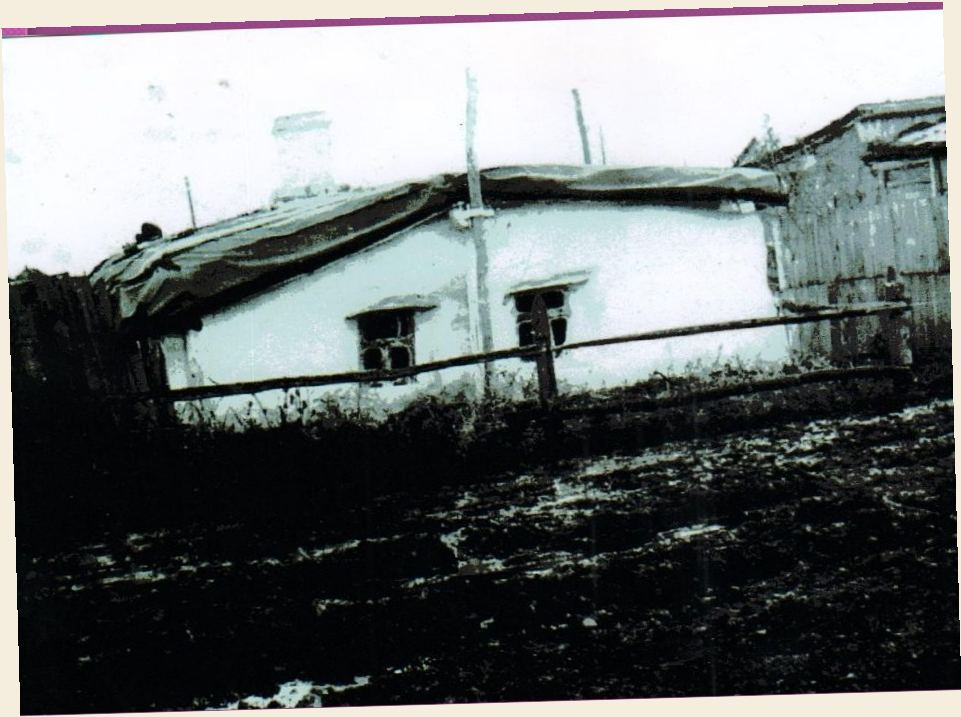
Сначала село называлось Михайловское. Позже появилось название Новомихайловка.
Село стоит между озёрами Косагаш и Русское, в 50 км от районного центра Мамлютки. В рукописи озеро названо «Кас-Агач», а в интернете «Косагаш». Скорее всего, это одно и то же озеро, просто имя записали по-разному.
По-казахски «қос ағаш» значит «два дерева». Это предположение, точного подтверждения пока нет.
Кострица пишет, что ночью у землянок стояла «тревожная тишина». Рядом с собой клали ружьё, а у кого его не было, вилы или топор. По словам автора, у этих земель был ещё один хозяин, бай. Между переселенцами и казахами случались столкновения.
Рукопись рассказывает только о переселенцах. Взгляд казахских аулов в ней не показан. Земля была их пастбищем, поэтому споры возникали у обеих сторон. Сегодня в селе и в округе рядом живут люди разных народов, и эта история напоминает, как важно договариваться и уважать друг друга.
— 7 —

1898 – 1974
Первую школу в селе открыли в 1898 году. В книге она описана так: «Деревянная, под железной кровлей, школа старенькая была».
В 1954 году построили новую школу, а в 1974 году — просторное здание, в котором школа работает и сейчас.
В 2008 году в селе построили новый храм. Хозяйство «Новомихайловское» во главе с директором Г.Г. Щеголевым помогало его возведению.
— 9 —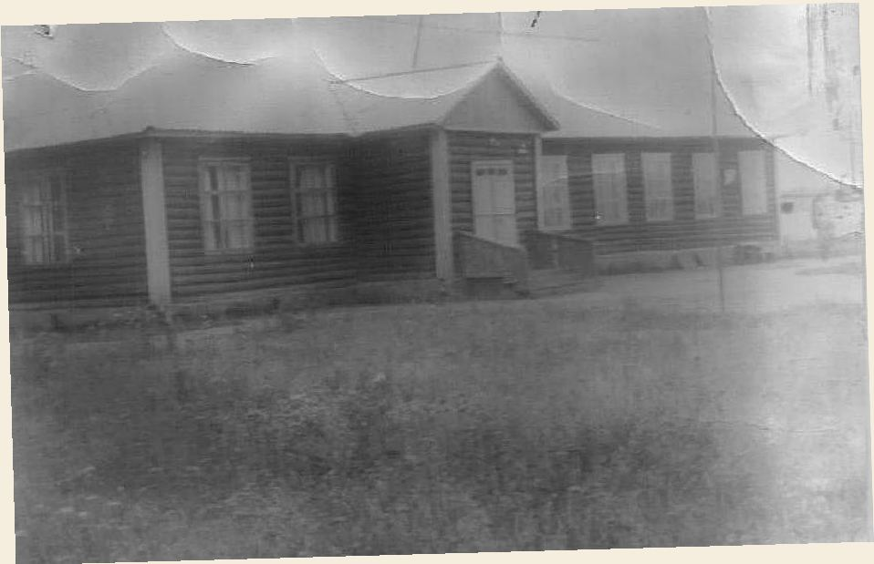

Школа стала центром жизни села. Здесь учились дети переселенцев, здесь же работал учителем Пётр Александрович Кострица.
— 10 —Старая церковь из брёвен сильно покосилась, крыша провалилась. Рядом с ней стоит новый кирпичный храм, красный, с голубыми куполами. Эти два здания будто разговаривают друг с другом: село помнит прошлое и строит будущее.
— 11 —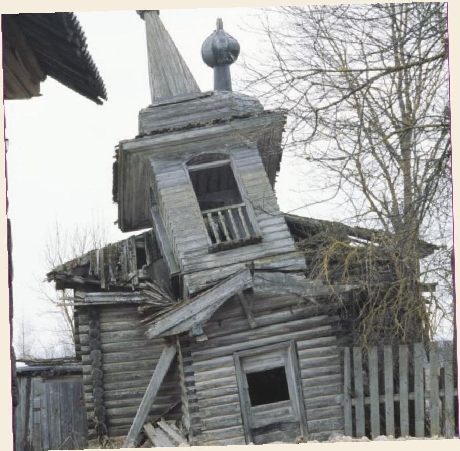
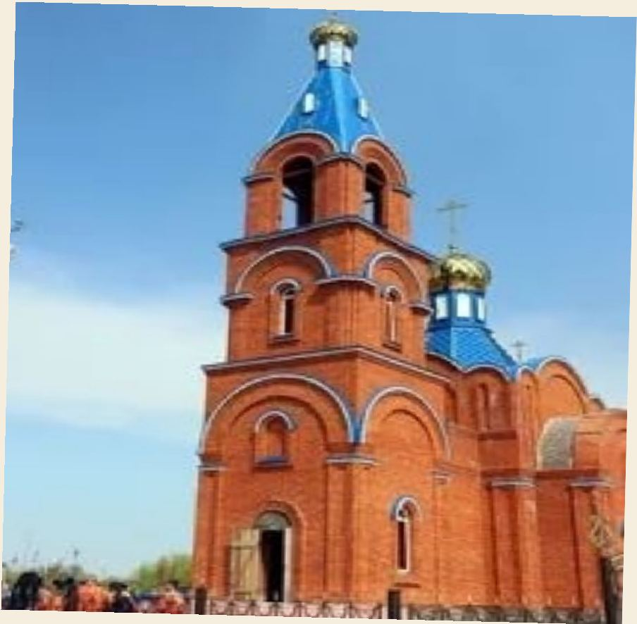
1941 – 1945
Война коснулась каждой семьи села. Мужчины ушли на фронт, женщины, старики и дети работали в тылу. Награды фронтовиков записаны по работе в школьном музее, школьной презентации и вырезкам из газет.
— 13 —род. 1922
орден Отечественной войны II степени, медаль «За отвагу», медаль «За освоение целинных земель», медаль «За доблестный труд», юбилейные медали
орден Отечественной войны I степени, медаль «За Победу над Германией», медаль «За боевые заслуги», юбилейные медали
медаль «За победу над Японией» (№ 121750, 09.05.1946), медаль «30 лет Советской Армии и Флота», медаль «60 лет Вооружённых Сил СССР»
орден Славы, медаль «За отвагу», медаль «За Победу над Японией», юбилейные медали
Из газеты 2010 года, статья «Солдат Великой войны» о Пономарёве Петре Васильевиче (1910–1995):
Пономарёв Пётр Васильевич в 1952 году стал Героем Труда за 12 803 центнера зерна, намолоченного за сезон.
— 15 —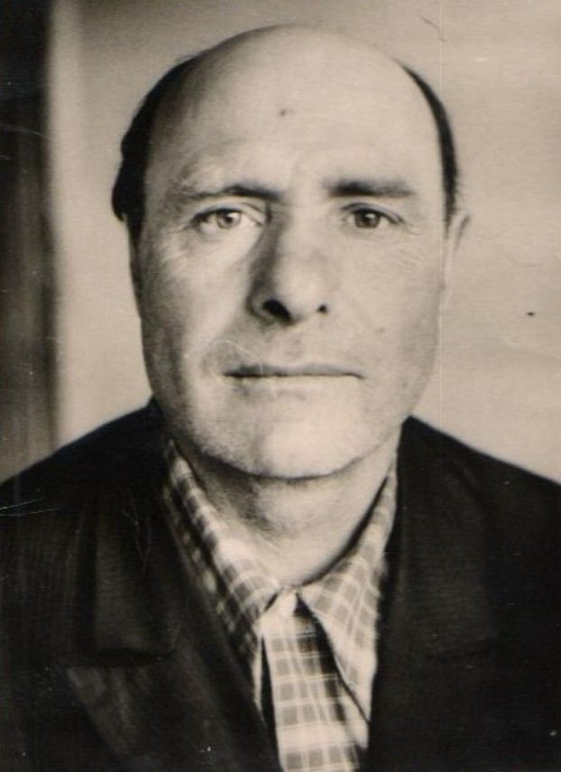


В школьном музее, основанном в 1993 году, хранятся награды, документы и фотографии фронтовиков.


Список погибших жителей — это имена тех, кто не вернулся домой. Их помнят в селе до сих пор.
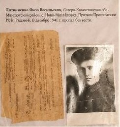

Труд и урожаи
Земля степи требовала тяжёлого труда. С первых лет жители пахали, сеяли, собирали урожай. Хлеб стал главным богатством села.

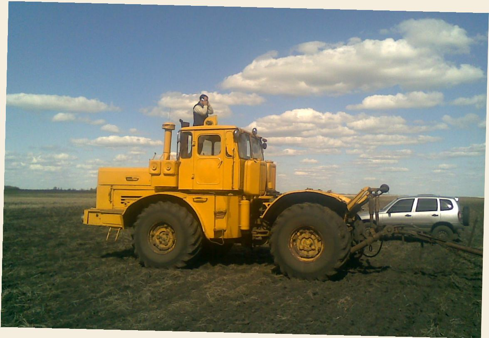
С годами хозяйство выросло, появились современные комбайны и тракторы. На полях работали целые династии механизаторов.
— 20 —2001 год
ТОО «Новомихайловское-2003» стало одним из лучших хозяйств района. В 2001 году урожайность превысила 22 центнера с гектара.


2010 год
30 октября 2010 года в клубе отметили День работника сельского хозяйства. Лето было засушливым, но хозяйство всё равно собрало хороший урожай. Хор спел песню «Даль великая», выступила группа «Девчата».


Эти люди не получали звёзд Героев. Но без их работы не было бы ни одного урожая.


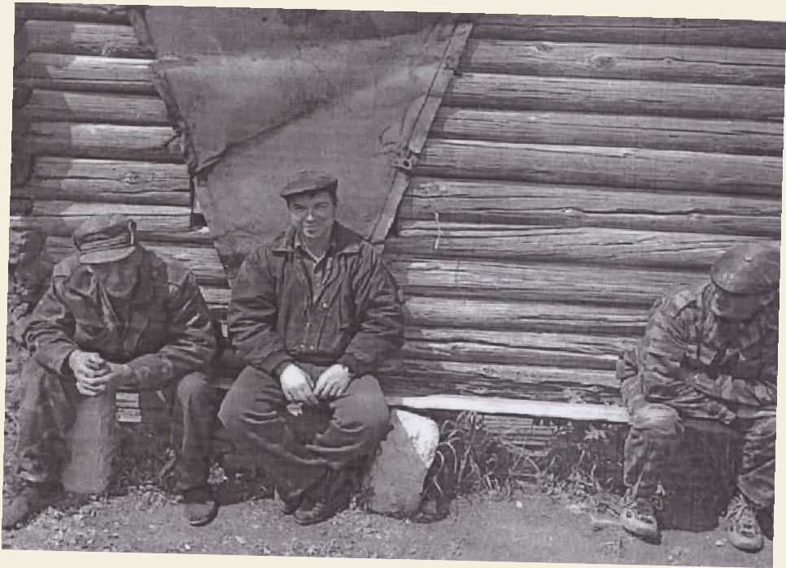
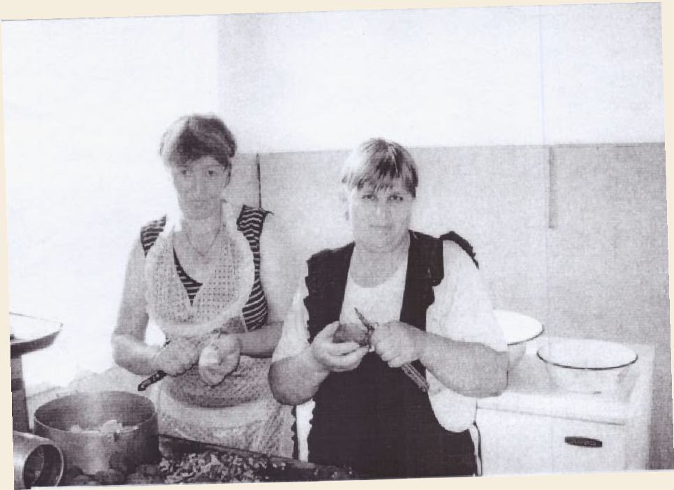
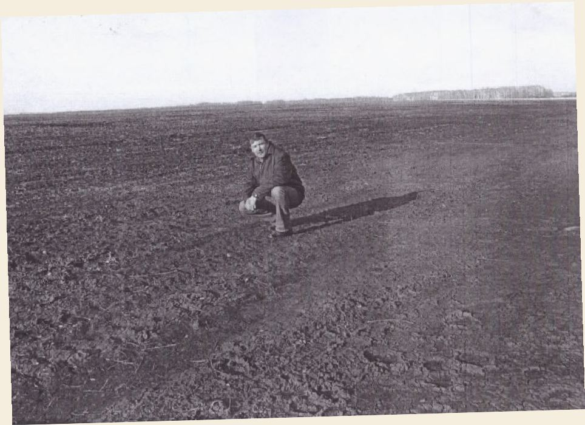
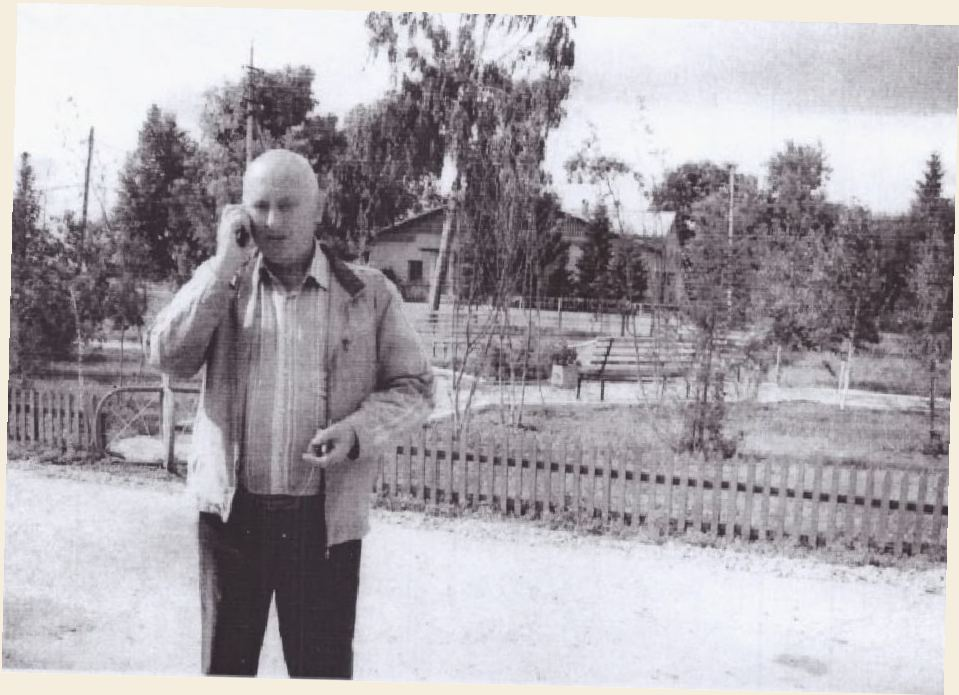
Окончила Новомихайловскую школу и вернулась в неё работать. Была учителем начальных классов, 10 лет старшей пионервожатой, 5 лет организатором внеклассной работы, 5 лет директором. Потом стала учителем русского языка и литературы. О ней написали статью «Неравнодушный человек».

Проза: «Родной уголок», «В пургу», «Цветы от Сокола», «Одиночество», «Время примеряет всех», «Встреча с отцом», «Счастье матери», «Повесть о гармонисте», «От Ишима до Амура».
Стихи: «Село Новомихайловка моя», «Родная школа», «Озеро Параскино», «У крылечка ветер», «Новомихайловке 100 лет», «Ветераны».
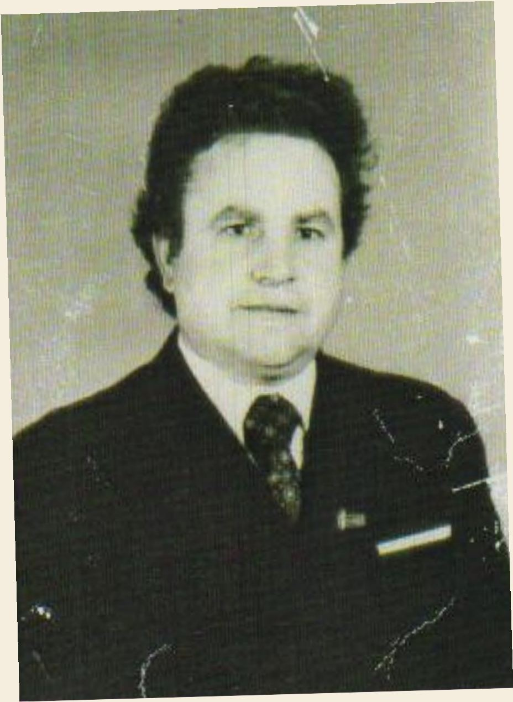


14 хозяев в 1895 году получили 210 десятин, это около 229 га. В 2010 году хозяйство убрало гектаров в сотни раз больше.
— 29 —Сегодня в селе есть школа, детский сад, фельдшерско-акушерский пункт, клуб и библиотека. В 2020 году здесь жили 296 семей. Для переселенцев с юга страны построили 5 домов. В 1895 году сюда приехали первые переселенцы, и через 125 лет в село снова приезжают новые жители.

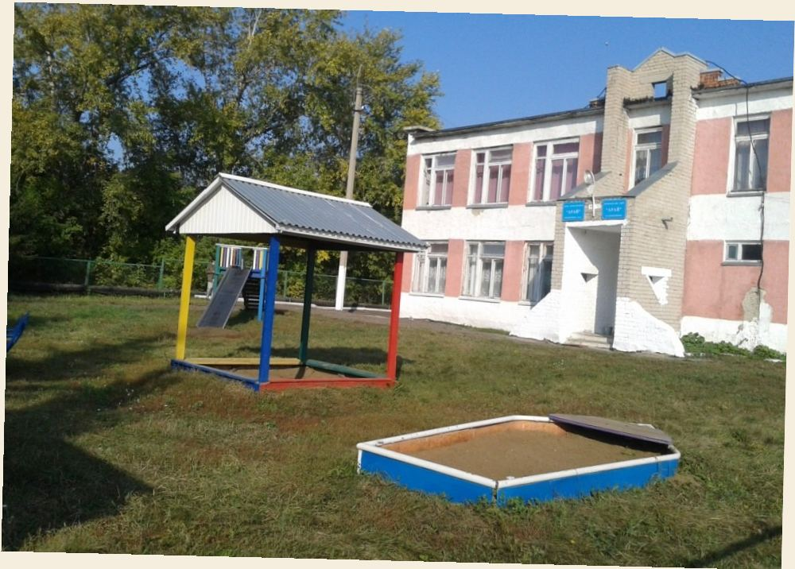
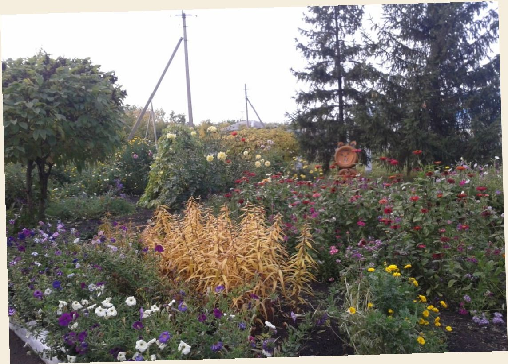

Наведите камеру телефона на QR-код, и откроется видеорепортаж о Новомихайловке.
Рукопись П.А. Кострицы; районные газеты 2001–2010 годов; школьная презентация «Село Новомихайловка моя»; фотографии работников ТОО «Новомихайловское-2003»; e-history.kz; статья «Новомихайловка (Мамлютский район)» в Википедии; warheroes.ru; телеканал «Qyzyljar».
— 33 —Собрана в 2026 году по рукописи, старым газетам и фотографиям.
Автор: Сулимова Дарья, 8 класс
Руководитель: Сураганов Асхат Рустемович